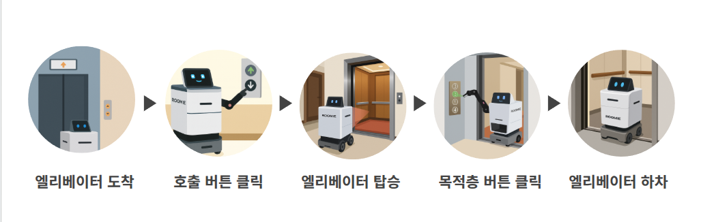
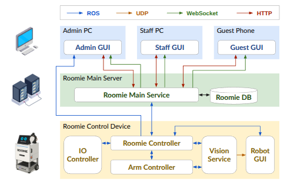
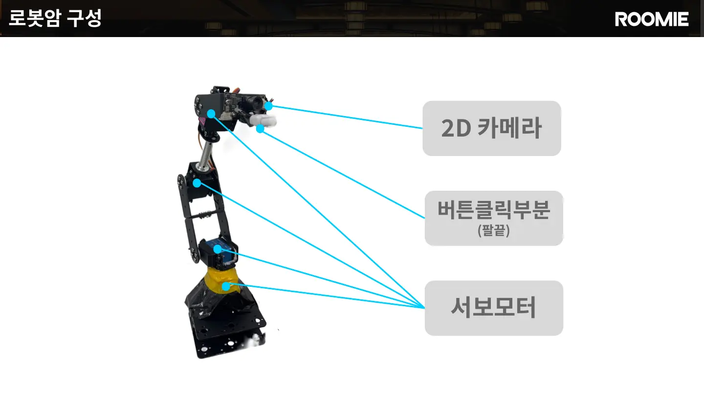
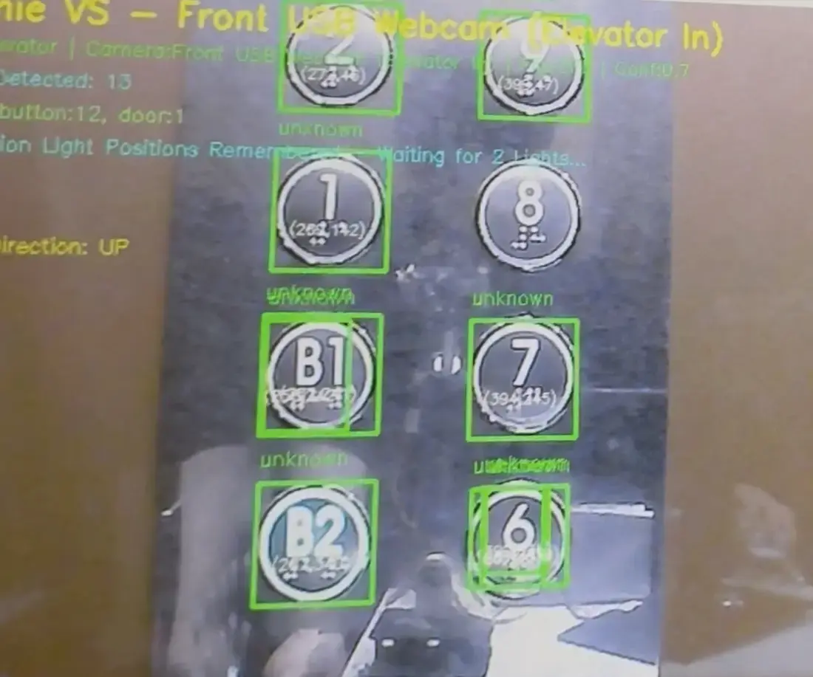
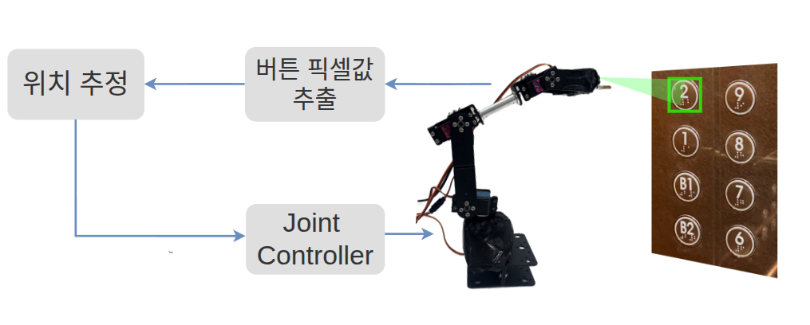
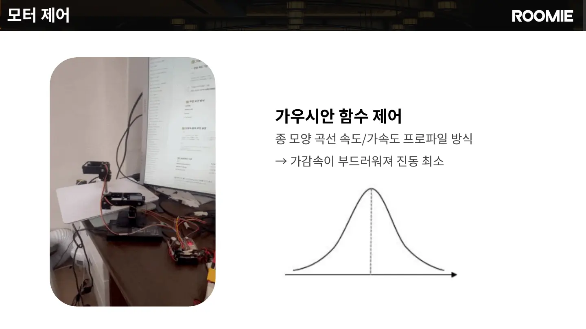

엘리베이터를 스스로 이용하는 서비스 흐름
ROOMIE는 엘리베이터 앞까지 자율주행한 뒤 외부 호출 버튼을 누르고 문 열림을 확인합니다. 탑승 후에는 내부 목적층 버튼을 조작하고, 층수 표시기의 OCR 결과로 도착을 판단한 다음 하차해 기존 배송·안내 임무를 계속합니다.

시스템 설계
투숙객은 Guest GUI에서 룸서비스를 주문하거나 목적지를 선택하고, 직원은 Staff GUI에서 주문을 확인한 뒤 픽업을 요청합니다. 요청은 Roomie Main Service를 거쳐 로봇에 할당되며, ROS 2 기반 Roomie Controller가 주행·비전·로봇팔·적재함 제어 모듈의 실행을 연결합니다.

Arm Controller 하드웨어 구성
본체 기준 약 5만 원대의 교육용 4축 로봇팔을 사용했습니다. 팔끝에는 일반 2D 카메라와 버튼 접촉부를 장착하고, 네 개의 서보모터를 ESP32에서 제어하도록 구성했습니다.

2D 카메라로 버튼 목표 좌표 계산
Vision Service가 검출한 버튼의 중심 픽셀 (u, v)와 Bounding Box 너비 Wpx를 입력으로 사용했습니다. 버튼의 실제 지름은 D = 35 mm로 설정하고, 카메라 내부 파라미터 (fx, fy, cx, cy)를 이용해 카메라에서 버튼까지의 거리와 방향을 계산했습니다.

핀홀 카메라 모델에서 버튼의 실제 지름과 영상 속 크기의 비율로 깊이 Z를 근사합니다. 이후 중심 픽셀을 역투영해 카메라 좌표계의 버튼 위치 p_camera = (X, Y, Z)를 구했습니다.
현재 관절각 q의 Forward Kinematics로 Tbase←tool을 계산하고, Hand–Eye Calibration으로 구한 고정 변환 Ttool←camera를 적용했습니다. 그 결과 카메라 기준 버튼 위치를 로봇 베이스 기준 목표 p_base로 변환해 4축 역기구학의 입력으로 사용했습니다.

4축 IK 목표 검증
변환된 목표 위치는 ikpy 기반 4관절 역기구학으로 계산했습니다. 현재 관절각을 초기값으로 사용하고, 계산 결과를 Forward Kinematics로 다시 검산해 수치 잔차가 1 mm를 넘거나 관절 제한을 벗어나면 이동을 실패 처리했습니다.
여기서 1 mm는 IK 수치해의 허용 잔차이며 실제 로봇팔 끝단의 절대 정확도를 의미하지는 않습니다.
관측 자세에서 버튼 누르기
초기에는 임의의 자세에서 버튼 위치를 계산해 시작 자세에 따라 팔끝의 도달 위치가 달라졌습니다. 이후 ClickButton 요청을 받으면 먼저 정해진 관측 자세로 이동하고, 같은 조건에서 버튼 위치를 계산하도록 순서를 고정했습니다.
로봇팔 링크의 전체 길이는 약 33.5 cm이므로 팔만으로 확보할 수 있는 작업 범위가 제한적이었습니다. ROOMIE 본체가 버튼 가까이 정밀하게 접근한 뒤, 로봇팔이 관측 자세에서 클릭 동작을 실행하도록 구성했습니다.
80 mm
100 mm


Gaussian 프로파일 기반 모션 제어
등속 제어에서 발생한 팔끝 지터를 줄이기 위해 Gaussian 프로파일로 가감속을 부드럽게 만들었습니다. ESP32는 네 개 서보의 목표각을 6 ms 주기로 갱신하고, 동작이 끝나면 완료 ACK를 반환합니다.

전체 시연
최종 결과
한계
10회 중 로봇팔 끝단이 버튼에 정확히 닿은 경우는 3회였습니다. 나머지 7회는 목표 위치를 벗어나 버튼에 접촉하지 못했습니다.
버튼 크기로 거리를 근사했지만 검출 크기와 촬영 각도에 민감했습니다.
관측 자세를 통일해도 실제 팔끝 위치에는 오차가 남았습니다.
접촉 정확도와 별개로, 팔을 펼친 자세에서는 토크와 프레임 강성이 제한적이었습니다.
Encoder와 Force Sensor가 없어 실제 팔끝 위치와 접촉력을 정량 측정하지 못했습니다.